Termux
The freedom of shelling out on Android
Jb Doyon - https://jiby.tech/
Press S for speaker notes
What is it
Termux — Terminal emulator for Android
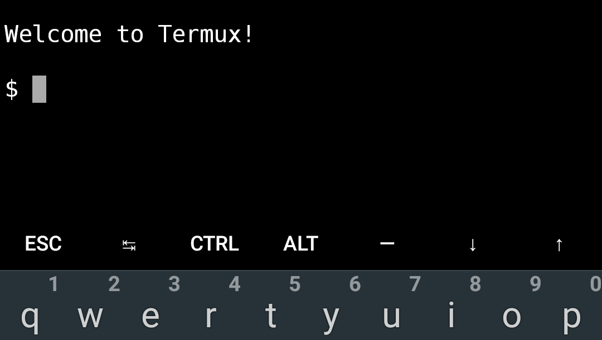
In a nutshell
For newbies
Termux is an easy way into the linux world
Experiment with the command line without installing Linux!
For power users
Termux unlocks the power of the terminal on your Android
Script your phone/tablet!
Break Automate things!
Specifically
- Capable shell
- Full dev environment
- Interop with Android
Installation


What can it do?
bash (busybox)
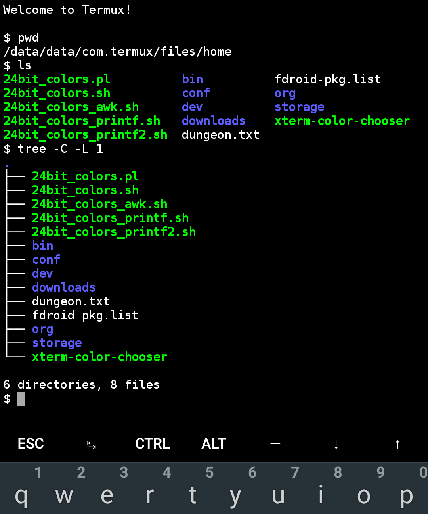
coreutils
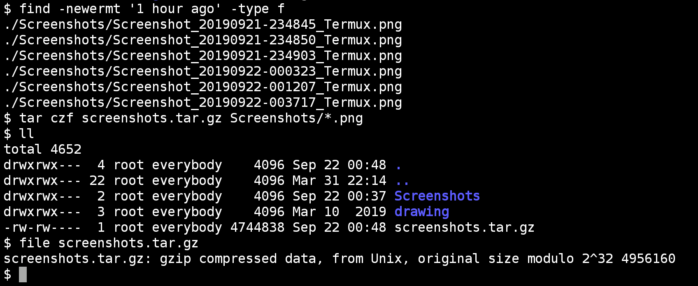
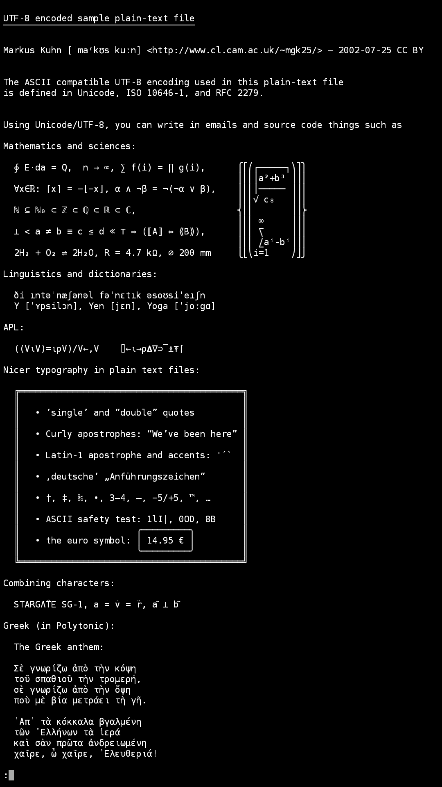
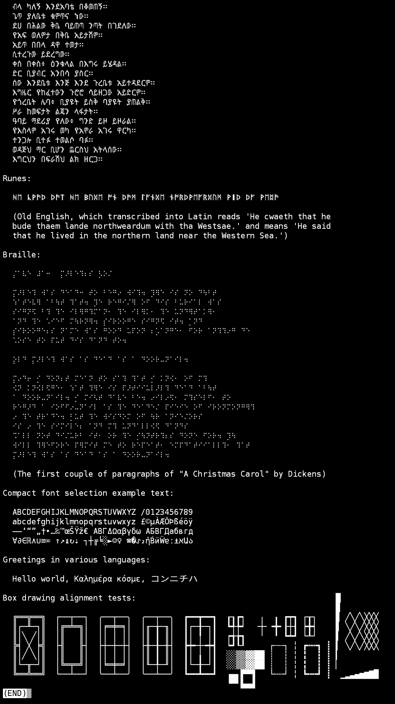
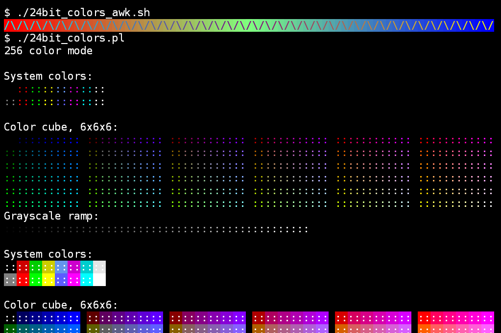
curses

SSH
server & client
- Wifi
- USB
- Bluetooth
Separate apps
- Termux:Boot
- Run script(s) when your device boots
- Termux:Widget
- Start scripts from the home screen
- Termux:Float
- Run Termux in a floating window
- Termux:Styling
- Customize color & fonts
- Termux:Task
- Call Termux executables from Tasker
Package manager
apt based, Debian repos
"This APT has Super Cow Powers"
$ apt moo
(__)
(oo)
/------\/
/ | ||
* /\---/\
~~ ~~
..."Have you mooed today?"...
$ pkg list-all | wc -l 975 $ pkg list-installed # heavily redacted for relevance (skipped libs + termux internals)
apt bash binutils busybox bzip2 ca-certificates clang coreutils curl dash diffutils dnsutils dos2unix dpkg ed emacs ffmpeg file findutils fontconfig freetype gawk gdbm git glib gnupg gnutls gpgv grep gzip harfbuzz htop hugo inetutils jq krb5 ldc ldns lesslinux-man-pages man ncurses ncurses-ui-libs ndk-sysroot net-tools netcat nmap oathtool openssh openssl pass pass-otp patch pcre pcre2 perl pinentry procps psmisc python readline resolv-conf rsync science-repo sed silversearcher-ag stow strace tar texinfo tmux tree unzip util-linux vim vim-runtime xmlsec xz-utils zlib
Dev environment
Write code on the go
Editors
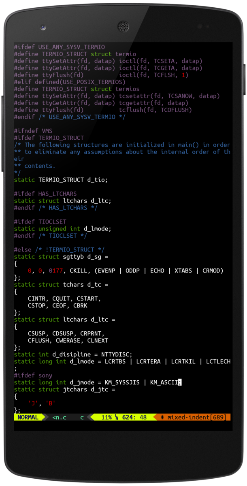
$ pkg search editor vi 1.4.0-1 ed 1.15 [installed,automatic] emacs 26.3-1 [installed] hexcurse 1.60.0-2 ired 0.6 joe 4.6-1 jupp 3.1jupp38-1 kakoune 2019.07.01-1 mg 20180927-1 micro 1.4.1-3 nano 4.4 ne 3.1.2-1 radare2 3.9.0-1 sed 4.7-1 [installed,automatic] vim 8.1.2050 [upgradable from: 8.1.2000] vis 0.5-4 zile 2.4.14-2
Programming languages
$ apt search programming # redacted for compactness clang 8.0.1 [installed,automatic] dart 2.4.1 ecj 1:4.6.2 erlang 21.3.8-1 gawk 5.0.1-4 [installed,automatic] gdb 8.3-3 golang 2:1.13 kona 20190226 ldc 1.17.0 [installed] lua 5.3.5-3 nim 0.20.2 perl 5.30.0-1 [installed,automatic] protobuf 3.9.1 aarch64 python2 2.7.16-3 python 3.7.4-1 [installed] ruby 2.6.4 rust 1.36.0 tcl 8.6.9-5
More packages
Language-specific package managers are there too!
pip install youtube-dl
Tools
curl 7.66.0 [installed] db 18.1.32-2 fossil 2.9 geoip2-database 20190908 git 2.23.0 [installed] git-crypt 0.6.0-1 git-lfs 2.8.0-1 gitea 1.9.3 global 6.6.3 hub 2.12.4 jq 1.6-1 [installed] libsqlite 3.29.0-1 [installed,automatic] postgresql 11.5 redis 5.0.5 ripgrep 11.0.2 screen 4.6.2-1 silversearcher-ag 2.2.0-1 [installed] texlive-full 20190410 tig 2.4.1-3 tmux 2.9a-2 [installed]

Got root?
$ su
No su program found on this device. Termux does not supply tools for rooting, see e.g. http://www.androidcentral.com/root for information about rooting Android.
Android interop
- Termux → Android
- Android → Termux
Termux → Android
$ termux-open -h
Usage: termux-open [options] path-or-url Open a file or URL in an external app. --send if the file should be shared for sending --view if the file should be shared for viewing (default) --chooser if an app chooser should always be shown --content-type type specify the content type to use
termux-open my_cool_file.pdf termux-open https://www/gnu.org/ termux-open --send --chooser myfile.c # see also termux-share for files
Storage access
termux-setup-storage
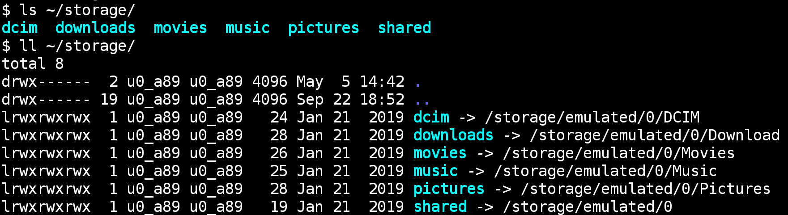
Requires Storage permission
Termux API
Need pkg + Termux:API app
pkg install termux-api
termux-audio-info termux-open-url termux-battery-status termux-reload-settings termux-brightness termux-sensor termux-call-log termux-setup-storage termux-camera-info termux-share termux-camera-photo termux-sms-inbox termux-clipboard-get termux-sms-list termux-clipboard-set termux-sms-send termux-contact-list termux-speech-to-text termux-dialog termux-storage-get termux-download termux-telephony-call termux-file-editor termux-telephony-cellinfo termux-fingerprint termux-telephony-deviceinfo termux-fix-shebang termux-toast termux-info termux-torch termux-infrared-frequencies termux-tts-engines termux-infrared-transmit termux-tts-speak termux-job-scheduler termux-upgrade-repo termux-keystore termux-url-opener termux-location termux-vibrate termux-media-player termux-volume termux-media-scan termux-wake-lock termux-microphone-record termux-wake-unlock termux-notification termux-wallpaper termux-notification-list termux-wifi-connectioninfo termux-notification-remove termux-wifi-enable termux-open termux-wifi-scaninfo
termux-dialog -l # widget arguments redacted
Supported widgets: confirm - Show confirmation dialog checkbox - Select multiple values using checkboxes counter - Pick a number in specified range date - Pick a date radio - Pick a single value from radio buttons sheet - Pick a value from sliding bottom sheet spinner - Pick a single value from a dropdown spinner speech - Obtain speech using device microphone text - Input text (default if no widget specified) time - Pick a time value
Start Android activity
Have not made it work personally (need root?)
am start --user 0 -n com.package.name/com.package.name.ActivityName am start --user 0 -n com.android.chrome/com.google.android.apps.chrome.Main am start --user 0 -n com.termux/com.termux.app.TermuxActivity
Case study
How much can we do?
Wifi-based phone backup
SSHFS over Wifi to backup phone data
Password manager UI
Using pass (passwordstore.org, GPG-based) listing passwords via Android UI!
termux-dialogto select- Password manager invoked
- Clipboard magic (45s)
Hugo serve
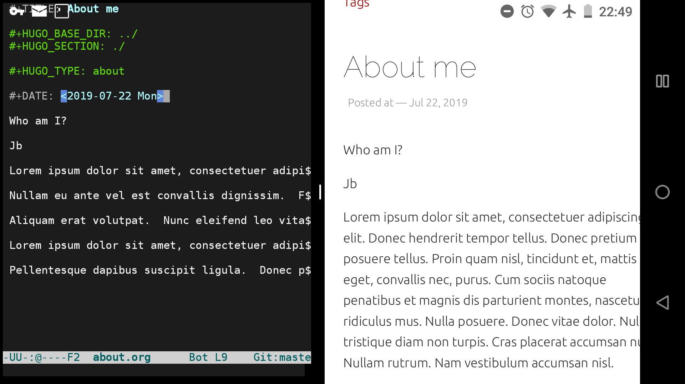
Reveal.js presentations
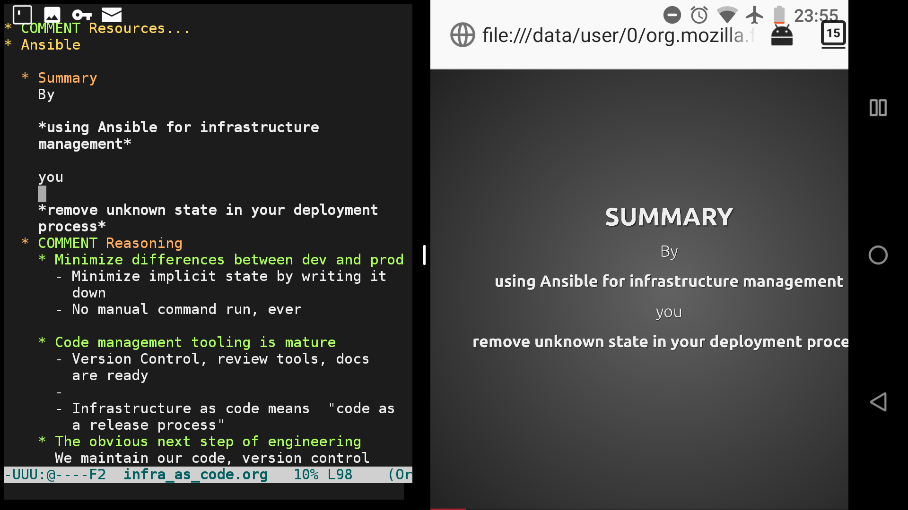
Dotfiles sync
Bluetooth file exchange to sync git repos work↔phone↔home
- Git bundle to file
- Bluetooth send
- unpack as git remote
Recap: Termux
- Capable shell
- Full dev environment
- Interop with Android
Questions?
Backup slides
For the advanced users with difficult questions
Limitations
Termux is not Linux:
- Not FHS (no
/usr/) - Root FS is normal data
- single user (Android app limitation)
X11 apps
Via vnc + x11-packages
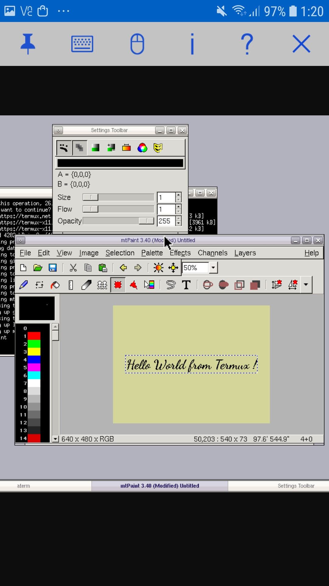
rooted packages
Via root-packages (separate repo to apt install)